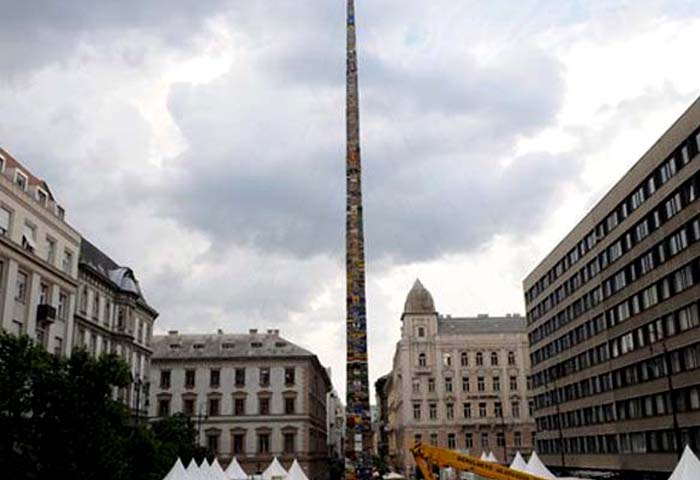
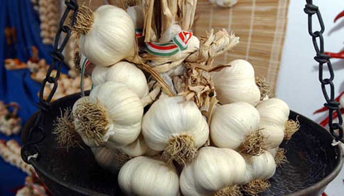
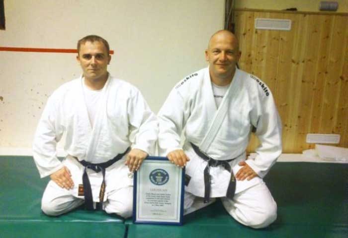
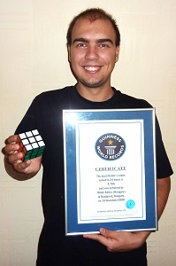
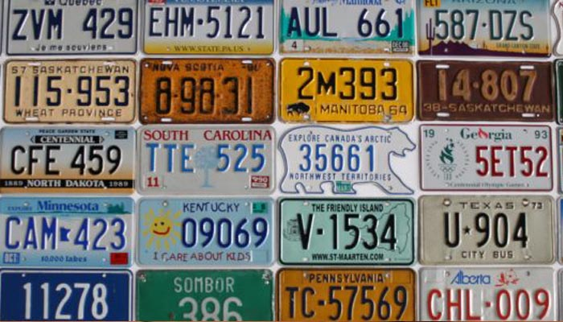

Magyar Guinness rekordok
Nagyon sok magyar Guinness rekord van, ebből én viszont csak ötöt szeretnék kiemelni amit érdekesnek találtam.Ebből én most párat be is szeretnék mutatni.
1. A világ legmagasabb legó tornya
Ez egy 34 méteres modern obeliszk volt. Ezt a 34 méter magas tornyot több mint 450 000 legóból építették fel, a Szent István Bazilika előtt 2014-ben.
2. A leghosszabb fokhagymafüzér
Ez a fokhagymafüzért a csongrádi településen készítették el 2006-ban. A korábbi rekord norvég volt, de ezt a magyarok majdnem megduplázták , 255 métert fűztek a makói asszonyok a nemzetközi makó fesztiválon. Ezt a füzért 6800 fokhagymából készítették.
3. Legtöbb harcművészeti dobás
Ezt a rekordot Mezei Csaba és Farkas Zoltán állította fel 10 óra alatt. Ehhez a rekordhoz 57 603 dzsúdó dobást kellett végrehajtaniuk. Ezt 2003-ban nyerték el.
4. Legtöbb rubik kocka kirakva egy nap alatt
A nagykanizsai Baticz Milán ezt a rekordot 2008-ban állította fel. A rekordkísérlet során 24 óra alatt 4786-szor rakta ki a különféle algoritmusok alapján összekevert Rubik-kockákat. Ezt azóta sem sikerület felülmúlnia.
5.A világhírű rendszámtábla gyűjtemény
Kenyeres Péter és Kenyeres Tamás 1990-ben rendszámtáblákat kezdett el gyűjteni.Ezzel a különös szenvedélyükkel 2011-ben bekerültek a Guinness Rekordok Könyvébe is. Ez a gyűjtemény 11 345 különféle rendszámtáblát tartalmaz, melyeket 133 országból szereztek be. Az igazoló oklevél Kecskemétre érkezett.
Még több érdekes magyar Guinness Rekord
- A világ legnagyobb képeslapja
- Egyedülálló Vármakett park - a Velencei-tó partján
- A legtávolabbi kosárba dobás rekord
- A legtöbb lassúzó pár egy helyen
- A világ leggyorsabb kezű zongoraművésze
- A legnagyobb könyv a Földön - Aggteleken van kiállítva